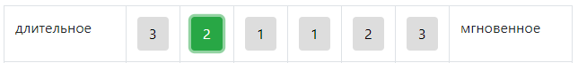

Перед Вами опросник отношения к времени.
Он состоит из трех таблиц "Настоящее", "Прошлое", "Будущее", которые включают 25 прилагательных.
Из каждой пары прилагательных Вам следует выбрать одно, наиболее подходящее.
Цифры в таблице отображают степень выбранного прилагательного. 1 - слабая степень, 2 - умеренная, 3 - сильная.
Так, например, настоящее для Вас длительное, а по степени выраженности 2 - умеренная. Значит Вы отмечаете:

Долго думать не нужно, выбирайте первое, что придет в голову.
Выберите прилагательные, которые наиболее отражают Ваше отношение к НАСТОЯЩЕМУ времени.
Выберите прилагательные, которые наиболее отражают Ваше отношение к ПРОШЛОМУ времени.
Выберите прилагательные, которые наиболее отражают Ваше отношение к БУДУЩЕМУ времени.
Оцените то, как Вы реально представляете свое БУДУЩЕЕ время, а не то, каким Вы хотите его видеть.